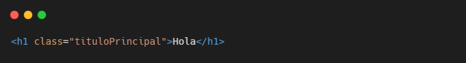
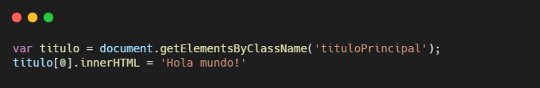

Tema 7Otras Recomendaciones
Uso de Nombres Descriptivos
En cualquier ambiente de programación, necesitarás nombrar algunos elementos con los que trabajarás. Para HTML y CSS, nombrarás diferentes clases e identificadores, y en JavaScript vas a declarar variables. Tú decidirás los nombres que utilices en estos elementos, pero deberás hacerlo de forma que sean fáciles de identificar y buscar.


El código de la segunda imagen utiliza el nombre de la clase tituloPrincipal para obtener un elemento. El nombre de esta clase hace bastante sencillo entender la función del elemento.
Ser autodidacta
A lo largo de todo tu proceso de aprendizaje te surgirán dudas, incluso después de acabar el curso. El desarrollo web es algo que cambia constantemente, cada vez surgen nuevas herramientas y tecnologías que en su momento pueden parecer difíciles de utilizar o confusas. Por esto, saber investigar por tu cuenta es una habilidad que todo programador necesita tener. Googlear una duda en la mayoría de los casos resolverá tu problema, pues es muy probable que alguien más haya estado en tu situación. El sitio más grande para dudas de programación es Stack Overflow, seguramente te encontrarás en este sitio cuando quieras resolver errores o problemas con tus propios proyectos de programación.
Otra cosa que te resultará de gran ayuda es leer documentación. Cualquier tecnología de uso abierto está documentada, y estas documentaciones contienen información de todas las diferentes funciones de una tecnología. La documentación completa de HTML la puedes encontrar haciendo clic aquí.